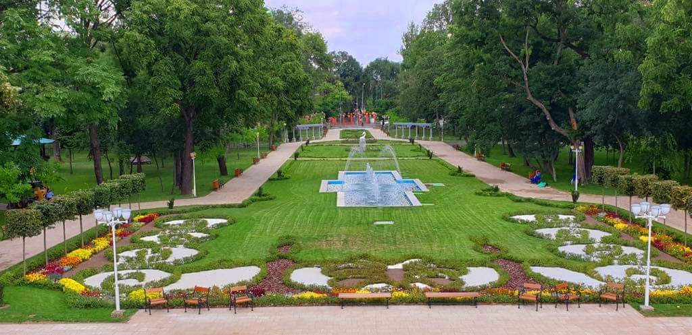

Lugares de Interés en Rumania
Cluj-Napoca
Cluj-Napoca, una ciudad universitaria y cultural, es conocida por su arquitectura barroca, parques encantadores y vida nocturna animada. Explora la Plaza Unirii y la Catedral de San Miguel para sumergirte en la historia y la vitalidad de la ciudad.


Castillo de Corvin
El Castillo de Corvin, también conocido como el Castillo de Hunedoara, es uno de los castillos medievales más grandes de Europa. Con sus torres imponentes y su historia intrigante, este castillo es una maravilla arquitectónica que te transportará en el tiempo.

Playa de Vadu
Para disfrutar de la belleza natural en la costa del Mar Negro, visita la Playa de Vadu. Con dunas de arena, aguas cristalinas y un entorno tranquilo, este lugar es perfecto para relajarse y disfrutar del sol y el mar.

Alba Iulia
Alba Iulia, con su Ciudadela Alba Iulia, es un tesoro histórico. La ciudadela, construida en el siglo XVIII, alberga monumentos, museos y una atmósfera única que te sumergirá en la rica historia de Rumania.

Monasterio de Voroneț
El Monasterio de Voroneț, situado en el norte de Rumania, es famoso por sus frescos pintados en un vibrante color azul conocido como "Azul de Voroneț". Este sitio declarado Patrimonio de la Humanidad por la UNESCO es una joya del arte religioso.

Parque Nacional Retezat
Para los amantes de la naturaleza, el Parque Nacional Retezat es un paraíso montañoso. Con lagos de aguas cristalinas, picos imponentes y una diversidad única de flora y fauna, este parque ofrece oportunidades inigualables para el senderismo y la observación de vida silvestre.

Timișoara
Conocida como la "Ciudad de los Parques", Timișoara es un centro cultural y artístico. Su arquitectura elegante y su historia única, marcada por eventos clave en la Revolución de 1989, hacen de Timișoara un destino fascinante.
